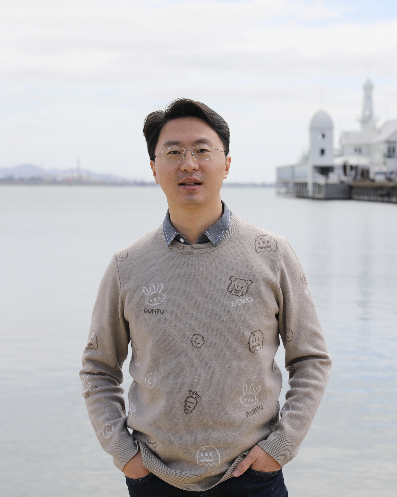

Academic Homepage · Data Management · UESTC
Kevin Kai Zheng
郑 凯
Professor, School of Computer Science and Engineering
University of Electronic Science and Technology of China
Spatio-temporal data management for intelligent, data-driven systems.
Professor Kevin Kai Zheng works on spatio-temporal databases, trajectory computing, spatial crowdsourcing, recommendation systems, AI4DB, and data-driven applications.
Email
zhengkai@uestc.edu.cn
zhengkai@uestc.edu.cn
Address
Qingshuihe Campus: No.2006, Xiyuan Ave, West Hi-Tech Zone, Chengdu, Sichuan, P.R.China
Qingshuihe Campus: No.2006, Xiyuan Ave, West Hi-Tech Zone, Chengdu, Sichuan, P.R.China
办公地址
电子科技大学清水河校区主楼 B1-406
电子科技大学清水河校区主楼 B1-406
300+
Peer-reviewed papers
22000+
Google Scholar citations
75
H-index
IEEE
Senior Member
CCF
Distinguished Member
Biography
Dr. Kai Zheng is a professor with University of Electronic Science and Technology of China (UESTC). He received Ph.D. degree of Computer Science from The University of Queensland (UQ) (advised by Prof Xiaofang Zhou). Before joining UESTC, he has worked as Research Fellow (2012 - 2013) and ARC DECRA (Australian Research Council Discovery Early Career Research Award) Fellow (2014 - 2016) with the Data and Knowledge Engineering Group of UQ. His research interests include spatio-temporal databases, trajectory computing, spatial crowdsourcing, recommendation systems, as well as many other data-driven applications. He received a few best paper awards on international conferences including ICDE 2019 and 2015, APWeb-Waim 2017, WISE 2017. He served the General co-Chair of DASFAA 2017, Program co-Chair of APWeb 2016, and Program Committee for over 20 top-tier conferences including SIGMOD, PVLDB, ICDE, KDD, IJCAI, AAAI, WWW, etc. He is the associate editor of IEEE TKDE, WWW Journal, Distributed and Parallel Databases (DPD) and Data & Knowledge Engineering (DKE). He has published over 300 peer-reviewed papers in top-tier conferences and journals in the area of Big Data Management, receiving over 22000 citations with H-index of 75 (according to Google Scholar). He is a senior member of IEEE and a distinguished member of CCF.
郑凯，电子科技大学计算机科学与工程学院教授，博士生导师。IEEE高级会员，CCF杰出会员。博士毕业于澳大利亚昆士兰大学。主要研究领域为时空数据管理、轨迹计算、自动驾驶算法、智能数据库（AI4DB）、空间众包、推荐系统等。在数据库、数据挖掘等领域的重要会议和期刊发表论文300余篇，授权发明专利30余项，谷歌学术引用22000余次, H指数75。曾获澳大利亚优秀青年基金（DECRA Fellowship），两次获数据库国际顶级会议ICDE最佳论文奖（2015和2019年），多次获DASFAA、APWeb-WAIM、WISE等数据库重要会议最佳论文和最佳学生论文奖。担任数据库国际会议的程序主席(APWeb 2016，MDM 2021等)和大会主席(DASFAA 2017)，担任大数据领域顶级期刊 IEEE TKDE，WWW Journal 等的编委，以及数十个国际顶级会议的领域主席（Area Chair）和资深程序委员（SPC）。
What's New
UpdatesRecent News
- 16/06/2026 -- One paper has been accepted by SIGMOD 2027.
- 26/05/2026 -- One paper has been accepted by VLDB 2026 (Industry track).
- 16/05/2026 -- One paper has been accepted by SIGKDD 2026.
- 10/03/2026 -- One paper has been accepted by VLDB Journal.
- 23/02/2026 -- Three papers have been accepted by ICDE 2026.
- 16/02/2026 -- Three papers have been accepted by WWW 2026.
Research Focus
- Big data management with emphasis on spatial and temporal data.
- Trajectory analytics and efficient search for mobility systems.
- AI-assisted databases, query optimization, and data-driven applications.
- Spatial crowdsourcing and recommendation in dynamic environments.
Selected Publications
Journals & ConferencesSelected Journal Papers (* Corresponding author)
-
{% for item in site.data.journals %}
Selected Conference Papers (* Corresponding author)
-
{% for item in site.data.conferences %}
Technical Reports
Preprints- Yan Zhao, Liwei Deng, Xuanhao Chen, Chenjuan Guo, Bin Yang, Tung Kieu, Feiteng Huang, Torben Bach Pedersen, Kai Zheng, and Christian S. Jensen. A Comparative Study on Unsupervised Anomaly Detection for Time Series: Experiments and Analysis. arXiv preprint arXiv:2209.04635 (2022)
Honors and Awards
Recognition- DASFAA 2023 Best Student Paper Runner-up. Tianjin, China, Apr, 2023
- APweb 2022 Best Paper Award Runner-up. Nanjing, China, Nov, 2022
- ICDE 2019 Best Paper Award. Macau SAR, China, April, 2019
- WISE 2017 Best Paper Award. Moscow, Russia, October, 2017
- WISE 2017 Best Student Paper Award. Moscow, Russia, October, 2017
- APWeb 2017 Best Paper Award. Beijing, China, July, 2017
- ICDE 2015 Best Paper Award. Seoul, South Korea, April, 2015
- Australia Research Council Discovery Early Career Research Award. January, 2014
Professional Activities
Academic ServiceChair Roles
- PC co-Chair: Australasian Database Conference (ADC) 2026
- Area Chair: ICDM 2026
- PC co-Chair (industry): APWeb 2025
- Area Chair: SIGKDD 2026, IJCAI 2025
- PC co-Chair: MDM 2021
- PC co-Chair (demo track): MDM 2019
- General co-Chair: DASFAA 2017
- PC co-chair: APWeb 2016
Editorial Board
- Journal of World Wide Web (WWW Journal) (start from Dec 2024)
- IEEE Transactions on Knowledge and Data Engineering (start from Dec 29th 2021)
- Journal of Distributed and Parallel Databases (DAPD) (term 2018 - 2024)
- Journal of Data & Knowledge Engineering (DKE) (Start from March 2019)
Guest Editor
- Special Issue on Advancing recommendation systems with foundation models. Journal of World Wide Web. 2024
- Special Issue on Intelligent Trajectory Data Analytics. Part I | Part II. ACM Transactions on Intelligent Systems and Technology. 2022
- Special Issue on Graph Data Management in Online Social Networks. Journal of World Wide Web. 2020
- Special Issue on Advances in Spatio-temporal Data Analysis and Management. GeoInformatica. 2018
- Special Issue on Big Data Search and Mining. Journal of World Wide Web. 2017
Program Committees
- 2026: ICDE, KDD, CIKM, WWW
- 2025: WWW, KDD, ICDE, DASFAA
- 2024: ICDE, WWW, KDD, CIKM, DASFAA
- 2023: WWW, WSDM, ICDE
- 2022: KDD, WWW, PAKDD, MDM
- 2021: ICDE, WWW, PAKDD, WISE
- 2020: VLDB, ICDE, AAAI, KDD, IJCAI, CIKM, MDM, DASFAA, APWeb/WAIM, BigComp, ACML, PAKDD
- 2019: VLDB, ICDE, AAAI, KDD, IJCAI, CIKM, MDM, DASFAA, APWeb/WAIM
- 2018: SIGMOD (demo track), ICDE, KDD, IJCAI, WWW, DASFAA, APWeb/WAIM
- 2017: DASFAA
- 2016: SIGMOD, SIGSPATIAL
- 2015: SIGMOD, CIKM, DASFAA
- 2014: CIKM